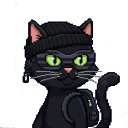
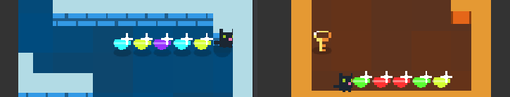

KleptoKitty
A Post Mortem
The Background
 Every year when 13th August rolls round developers from across the globe put away unfinished side projects to start something new. Namely the js13k game jam - an annual challenge to create a javascript game in under 13k or under (zipped). Running from 13th Aug to 13th September for the past 14 years it has gained something of a cult following and spawned some amazing games.
The Beginning
When this year theme 'Black Cat', dropped I was pretty excited and had a few compelling ideas. However, life and other commitments meant I was unable to make a start until the final week. Nothing like a tight deadline and a small game to get motivated. Previous years I rolled my own game engine but in the interests of variety, I opted for a pre-made engine - LittleJS. It's battle tested, performant and I had some experience with it in the past.
The Idea
Recently, I have been re-playing some old classics such as Mark of the Ninja and Tomb of the Mask to name a few. These influences pushed me towards stealth combined with the slick controls and dopamine explosions of Tomb of the Mask. Given the theme, our hero was predestined to be a black cat. I settled on the idea of sneaking around a mansion accruing loot, avoiding guards and traps.
The Prototype
LittleJS allowed me to knock out a basic game in a couple of hours. It's super efficient 2d map system saved me re-inventing the wheel and after some caffine fuelled keyboard bashing I had come up with a playable demo.
I then added a dash of bling;
- run particles with the built-in particle system
- glimmer on the diamond by superimposing a few shapes
- simple blur trail related to speed

LittleJS makes coloring image tiles super simple so I was able to get a lot of extra mileage by simply coloring white tiles. This worked well for creating vibrant wall tiles and the multicolored diamonds. 
The Muzak
Good tunes are a really important component of a fun game. Not being musically, inclined I turned to AI for a helping hand. I wanted a jazzy track, along the lines of the Pink Panther. Claude.ai did its best!
Note: As a starting point I was inspired by this wonderful
postmortem.
Basically, the lightweight ZzFXM
coupled with basic patterns which are then randomized.
The Problems
At this point it seemed all was going well and at full speed. The next
major task would be to design fun and engaging levels. And this is where
the wheels came off, a bit. Rather than focus on this new challenge, I
decided that a level editor would be beneficial in the long run. So,
I proceeded to eat into my dwindling time budget by making a level editor:
 (Note to self: make games not tools!)
(Note to self: make games not tools!)
To be honest, it was a big help but I wasn't left with much time to work on level design. Ultimately, I opted for what was easier (coding) at the expense of levels. One positive, though is that the level editor is built into the 'Directors cut' version. You can even share your level designs via URL.
The Build
A tedious part of any front end project / game jam is building, compressing
and deploying the dang thing. Luckily, I had concocted a small
npm package
earlier in the summer to handle all this:
npm create js13k-littlejs
It includes a dev server with hot reloading, deploy to github pages and automated build and zipping (using the amazing Roadroller) There is even has a built in animated gif recorder.
The Positives
- Using LittleJS, a lot of the heavy lifting was already done
- Reusing sfx and some gfx from previous games saved time
- Getting to make a game! What could be more fun?
The Negatives
- Spending too much time messing with the level editor
- Starting in the final week
- Not having play testers
If you've got this far, thanks and what are you waiting for? Go play the game: